Plan wycieczki
Zobaczone miejsca
- La Rambla
- Dzielnica Gotycka (Barri Gòtic)
- Katedra św. Krzyża i św. Eulalii (Barcelona Cathedral)
- Plaça Reial
- Mercat de la Boqueria
- Passeig de Gràcia
- Casa Batlló
- La Pedrera (Casa Milà)
- Palau Nacional (MNAC)
- Montjuïc
- Cementiri de Montjuïc
- Port Vell
- Pomnik Krzysztofa Kolumba (Mirador de Colom)
- L'Aquàrium de Barcelona
- Tibidabo
- Świątynia Najświętszego Serca Jezusowego (Temple Expiatori del Sagrat Cor)
- Park rozrywki Tibidabo
- Plaża Barceloneta
- Parc de la Ciutadella
- Font de la Cascada
- Park Güell (część ogólnodostępna)
- Sagrada Família
Czas wycieczki: 4 dni
Skład osobowy: 4 dorosłych
Kilometry pokonane pieszo: 53 plus sporo kilometrów pokonanych komunikacją miejską
Przez cały pobyt przemieszczaliśmy się pieszo. Barcelona jest świetnym miastem do spacerowania, a po drodze można trafić na mnóstwo klimatycznych uliczek, placów i kamienic, których nie zobaczy się z okna metra. Jedynym wyjątkiem była wycieczka na Tibidabo. Jeśli planujecie wejść do park Güell, koniecznie kupcie bilety z wyprzedzeniem. My zostawiliśmy to na ostatnią chwilę i niestety wszystkie wejścia były już wyprzedane. W Sagrada Família również warto zarezerwować bilety wcześniej, szczególnie w sezonie.
Plan wycieczki
Trasa
Zwiedzanie
Dzień pierwszy
Do Barcelony dotarliśmy w ciągu dnia, więc na pierwsze zwiedzanie wybraliśmy się dopiero wieczorem. Zamiast od razu odhaczać największe atrakcje, postawiliśmy na spokojny spacer po centrum i chłonięcie atmosfery miasta. Przeszliśmy tętniącą życiem La Ramblą, zaglądając w boczne uliczki Dzielnicy Gotyckiej, które po zmroku mają naprawdę wyjątkowy klimat. Trafiliśmy pod imponującą katedrę, minęliśmy pięknie oświetlone zabytkowe budynki i zajrzeliśmy nawet do sklepu pełnego tradycyjnych katalońskich figurek. Wieczorna Barcelona zrobiła na nas świetne pierwsze wrażenie. Dzień zakończyliśmy w niewielkim barze przy tapasach i dzbanku zimnej sangrii.
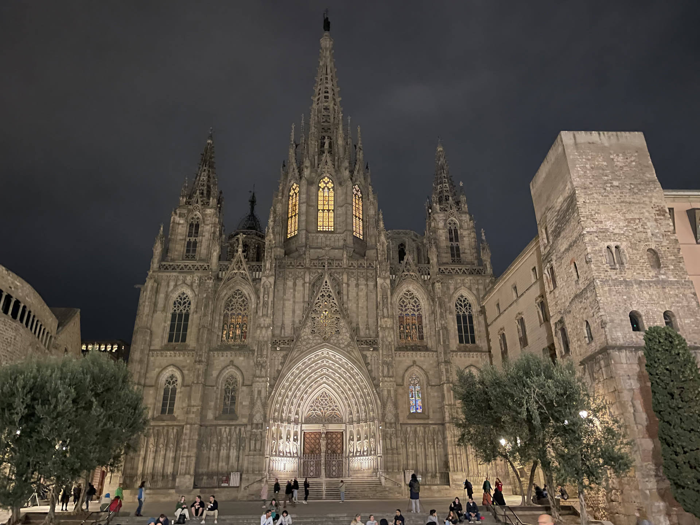
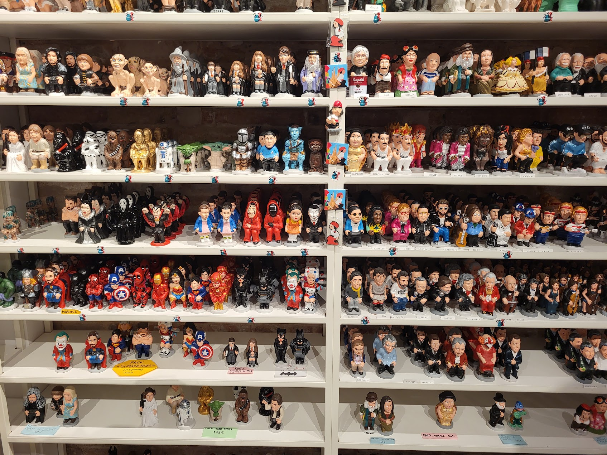
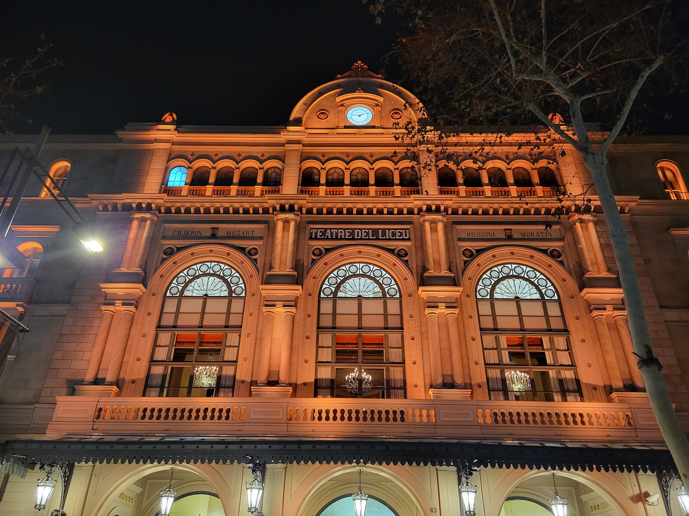
Zwiedzanie
Dzień drugi
Drugi dzień rozpoczęliśmy od spaceru Passeig de Gràcia, gdzie z bliska mogliśmy zobaczyć dwie najsłynniejsze kamienice zaprojektowane przez Antoniego Gaudíego. Casa Batlló i La Pedrera od lat są jednymi z symboli Barcelony, a ich falujące elewacje i ogrom detali sprawiają, że nawet stojąc naprzeciwko trudno zdecydować, na czym skupić wzrok. Następnie udaliśmy się na Mercat de la Boqueria. Specjalnie zaplanowaliśmy wizytę z samego rana, zanim targ wypełnił się turystami. Nawet jeśli nie planujecie większych zakupów, warto zajrzeć tu choć na chwilę – kolorowe stoiska pełne świeżych owoców, warzyw, serów czy lokalnych przysmaków doskonale oddają klimat Barcelony.Kolejnym przystankiem był Palau Nacional. Stamtąd ruszyliśmy dalej na Montjuïc. Spacerując jego alejkami w dół wzgórza, dotarliśmy do Cementiri de Montjuïc. To jedno z najbardziej nietypowych miejsc, jakie odwiedziliśmy podczas całego wyjazdu. Monumentalne mauzolea, bogato zdobione grobowce i cisza panująca między alejkami tworzą niezwykłą atmosferę. Schodząc z Montjuïc skierowaliśmy się do Port Vell, mijając po drodze Pomnik Krzysztofa Kolumba. Niedaleko portu znajduje się L'Aquàrium de Barcelonagdzie znajduje się między innymi podwodny tunel, w którym rekiny i płaszczki przepływają dosłownie nad głowami zwiedzających. Wieczorem wróciliśmy jeszcze do historycznego centrum.
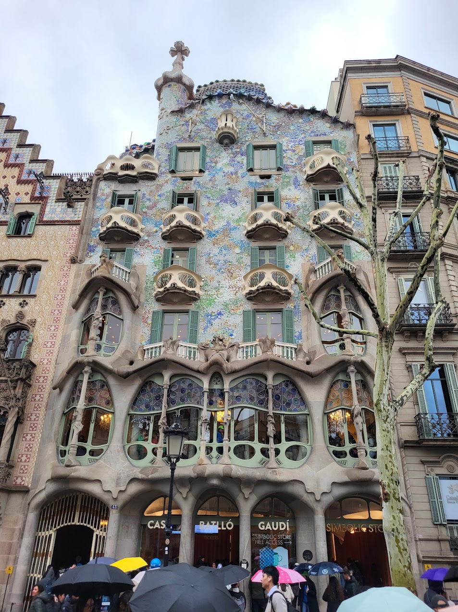
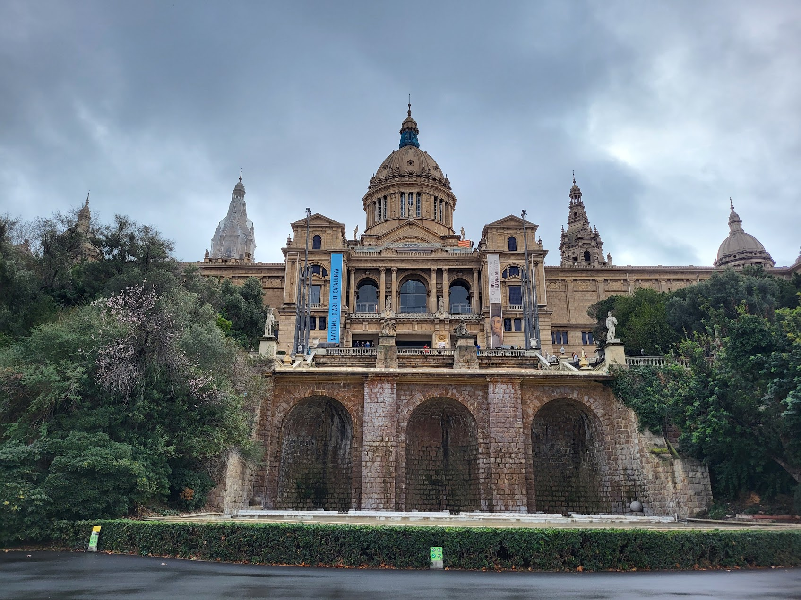
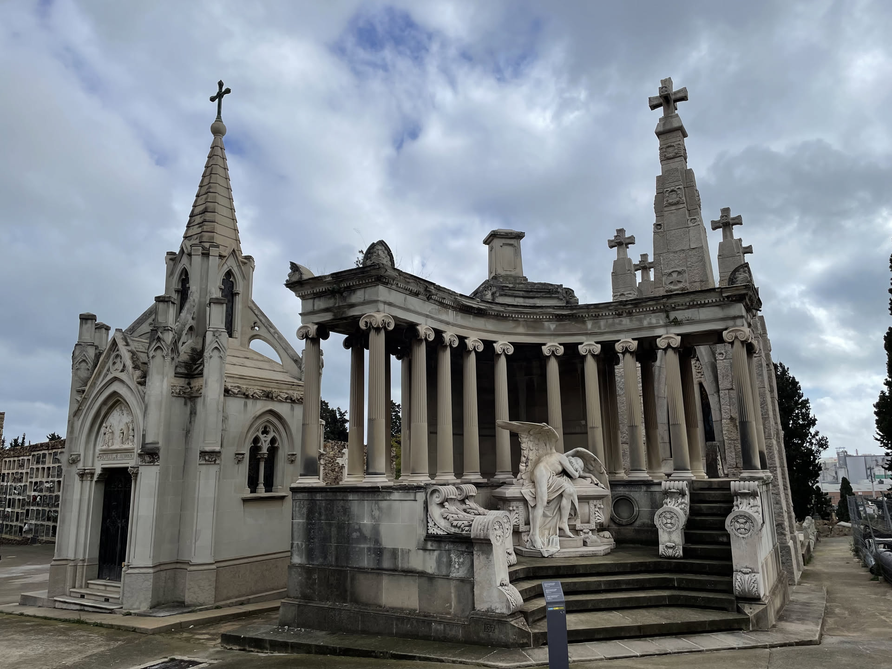
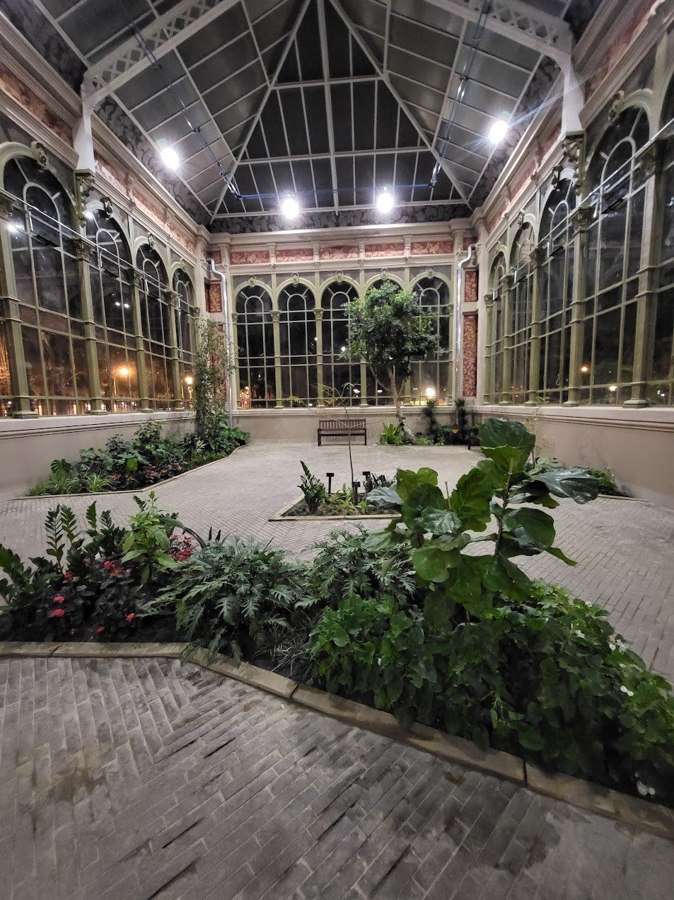
Zwiedzanie
Dzień trzeci
Trzeci dzień rozpoczęliśmy od wycieczki na Tibidabo. Było to jedyne miejsce podczas całego wyjazdu, do którego nie dotarliśmy pieszo (no, nie całkiem pieszo, bo spory odcinek jednak przeszliśmy 😉). Ze szczytu można podziwiać niemal całą Barcelonę. Odwiedziliśmy Świątynię Najświętszego Serca Jezusowego, a chwilę później przespacerowaliśmy się po jednym z najstarszych parków rozrywki w Europie. Nie skorzystaliśmy z atrakcji, powiem szczerze że chyba nie czułabym się na nich zbyt pewnie biorąc pod uwage ich wiek. Po powrocie zeszliśmy nad plażę Barceloneta. Następnie przeszliśmy przez Parc de la Ciutadella. Tam, na schodach Cascada del Parc de la Ciutadella, spotkaliśmy grupę tańczących ludzi. Połowa naszej ekipy dołączyła do nich a potem ruszyliśmy dalej. Na zakończenie zostawiliśmy sobie największy symbol Barcelony – Sagradę Famílię. W jej pobliżu zrobiliśmy obowiązkowy przystanek na nadziewane churrosy. Sama bazylika zachwyca z każdej strony, a ogrom detali sprawia, że można ją oglądać naprawdę długo i za każdym razem dostrzegać coś nowego. Specjalnie zostaliśmy tam do zmroku, bo chcieliśmy zobaczyć ją również w wieczornym oświetleniu.
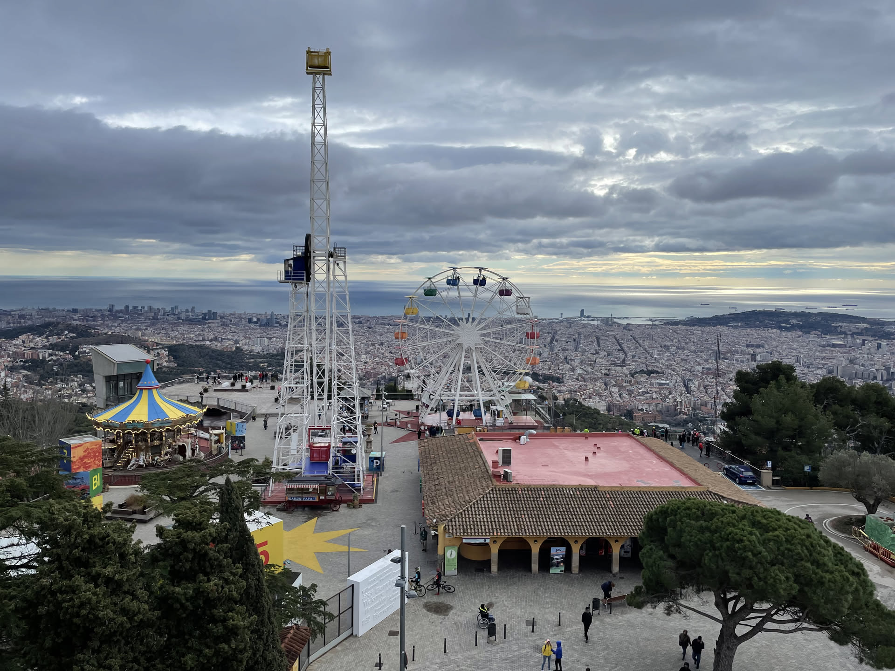
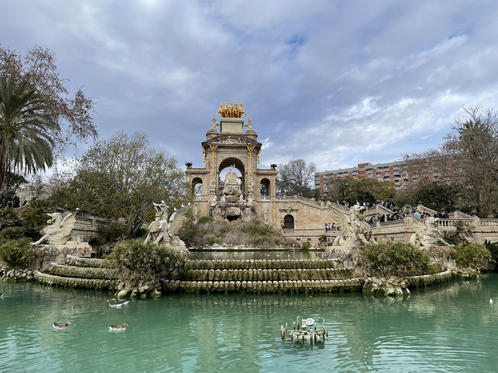
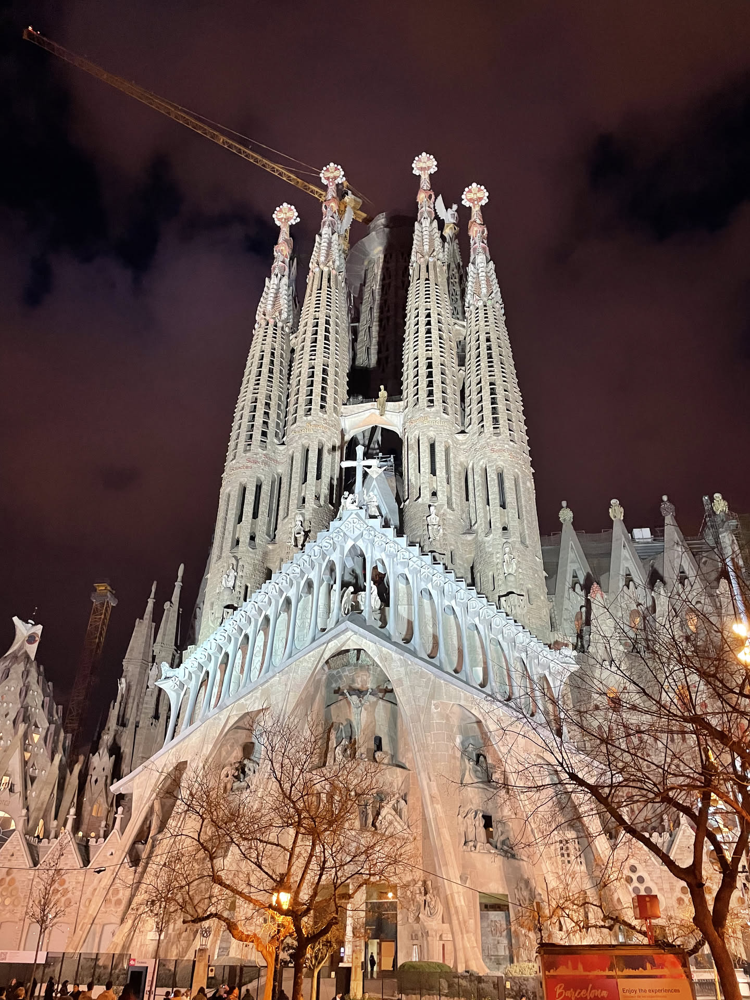
Zwiedzanie
Dzień czwarty
Ostatni dzień rozpoczęliśmy od wizyty pod Sagradą Famílią - a raczej chcieliśmy rozpocząć. Niestety okazało się, że wszystkie bilety na zwiedzanie wnętrza były już wyprzedane. Następnie ruszyliśmy w stronę Parku Güell, który również znajdował się na naszej liście obowiązkowych miejsc. Tutaj spotkała nas dokładnie taka sama niespodzianka – wejściówki do parku również były już niedostępne. Teraz już wiemy, że bilety do obu tych atrakcji najlepiej kupić z wyprzedzeniem 😉. Wróciliśmy zatem nad morze, potem zajrzeliśmy jeszcze raz do Parc de la Ciutadella. Wyjeżdżaliśmy z Barcelony z poczuciem, że to miasto zostawiło nam jeszcze kilka powodów, żeby kiedyś tu wrócić. Czasem nie wszystko idzie zgodnie z planem, ale właśnie takie drobne niedosyty sprawiają, że kolejna wizyta staje się jeszcze bardziej kusząca.
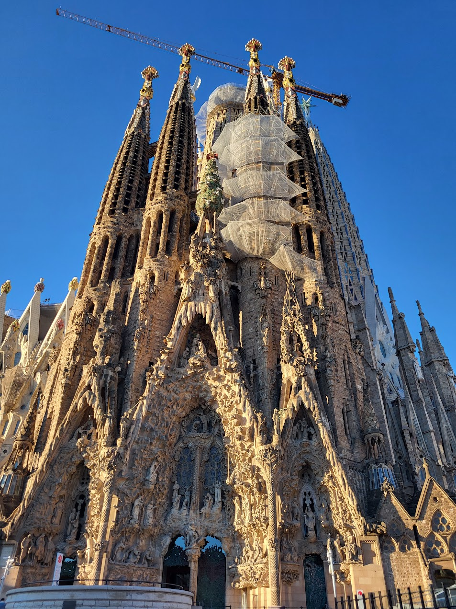
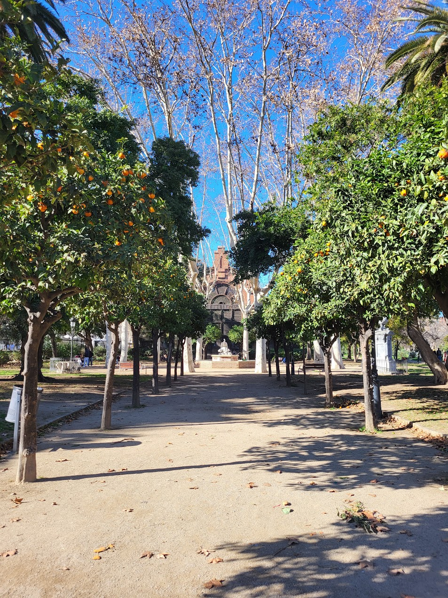